Mon Djê, rôle par rôle.
Chacun ne lit que ce qui le concerne : le personnel tourne beaucoup, et personne ne lira trois pages avant un vendredi soir. Ce guide est le même que celui de l'application (Profil → Comment utiliser Mon Djê).
Je vends
Vendeur, serveur, vendeuse : prendre les commandes et encaisser.
- Maquis, restaurant : Touche la table du client.
- Boutique : Touche « Nouvelle vente ». Les produits de la carte sont enregistrés par détail, kg, demi ou gros : prends bien celui qui correspond à ce que le client achète.
- Marché : Touche « Nouvelle vente ». Les produits de la carte sont enregistrés par tas, sachet, kg, sac ou carton : prends bien celui qui correspond à ce que le client achète.
- Vente directe : Touche « Nouvelle vente ».
Prendre une commande
- Touche « Nouvelle vente ».
- Cherche le produit ou prends-le dans « Les plus vendus ici », en haut de la liste.
- Touche une ligne pour changer la quantité : − et + si le client en veut moins ou plus.
- Pour retirer un produit, touche la ligne puis choisis le motif. Un motif est toujours demandé.
- Un produit affiché en grisé et « Fini pour aujourd’hui » ne se vend plus : touche « Remettre en vente » si un réassort arrive dans la journée, ou si c’était une erreur.
- Plus de stock d’un produit ? Touche « Fini pour aujourd’hui ? » sous sa fiche : les autres vendeurs le sauront tout de suite.
- Termine par « Valider la commande » : elle part à la caisse, qui prépare.

Encaisser
- Touche « Encaisser », choisis le mode de paiement.
- En espèces, saisis ce que le client t’a tendu : l’application calcule la monnaie.
- En Mobile Money, montre le QR au client et saisis le numéro avec lequel il a payé.
- Si le client ne paie qu’une partie maintenant, touche « Payer un acompte » et indique ce qu’il donne : le reste attend un prochain encaissement, tu ne peux pas encaisser deux fois la même chose.
- Remets ensuite l’argent au caissier : c’est lui qui valide et édite la facture.
- Tant que tu n’as pas remis l’argent, il apparaît à ton nom sur l’écran du propriétaire.
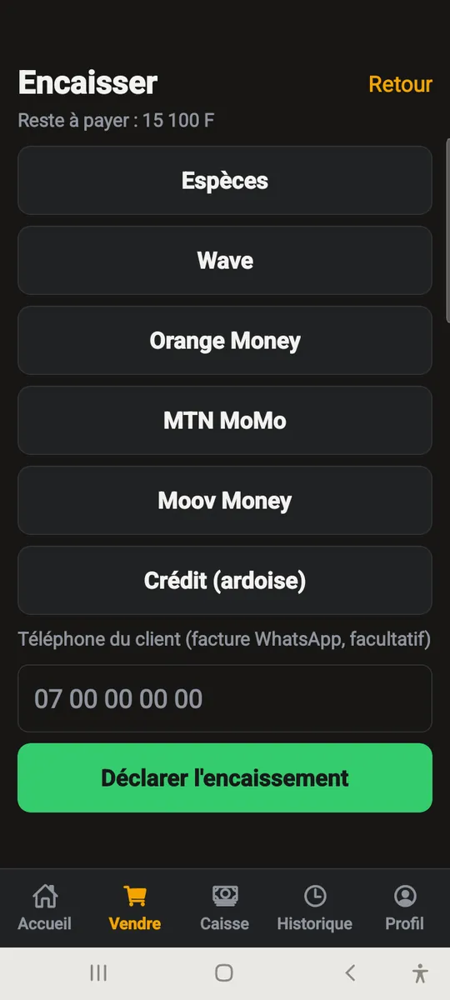
Annuler
- Appui long sur une table pour annuler sa commande.
- Si rien n’est encore parti au bar, l’annulation est immédiate.
- Si la commande est déjà partie, tu demandes : la caisse validera.
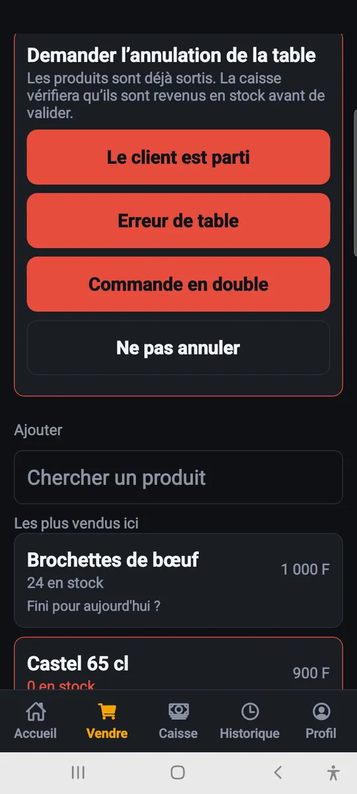
Je tiens la caisse
Caissier ou caissière : valider les paiements, compter le tiroir, remettre l'argent.
Ouvrir la caisse
- Au début du service, compte les espèces présentes et saisis-les comme fond de caisse.
- Sans cette étape, l’écart de fin de service ne veut rien dire.
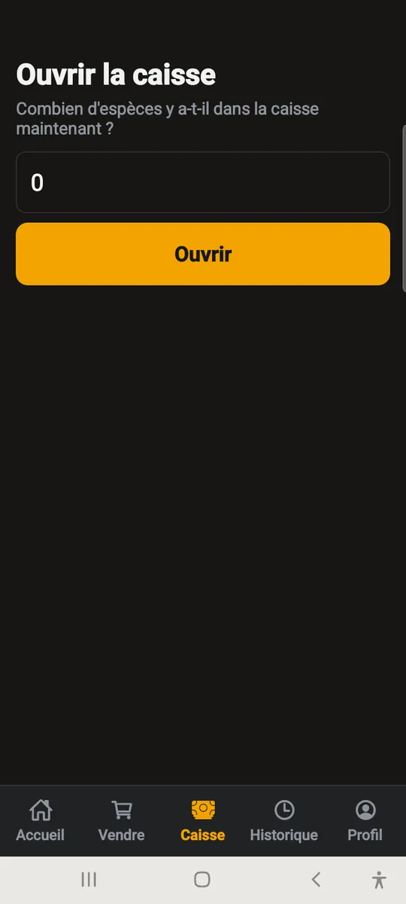
Pendant le service
- « Commandes à préparer » affiche ce que les vendeurs ont validé : sers, puis touche « Sortie validée ».
- « Annulations demandées » : valide ou refuse. En validant, les produits reviennent en stock.
- « Sorties faites, pas encore encaissées » : ce qui est parti du bar et que tu attends toujours en argent.
- « Stock et alertes » : ce qui reste, ce qui manque, et la saisie des livraisons reçues. Les prix et la carte restent au propriétaire.
- « Paiements à valider » : compte l’argent que le vendeur te remet, puis valide.
- La monnaie à rendre est affichée : c’est toi qui la rends au client.
- Si le montant ne correspond pas, choisis un motif : l’écart est tracé au nom du vendeur.
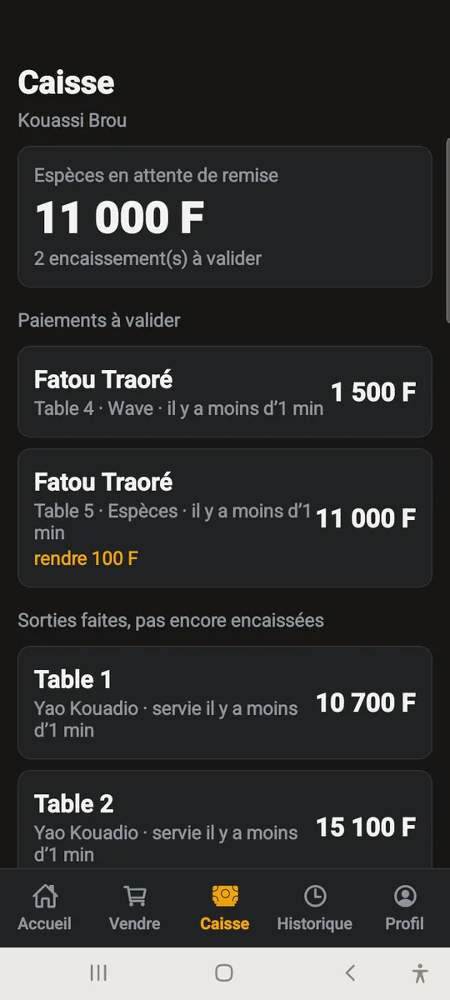
Fermer la caisse
- Compte les espèces réellement présentes et saisis le total.
- L’application affiche l’écart avec ce qui était attendu.
- Un écart nul le premier soir est rare : ce qui compte, c’est qu’il diminue au fil des jours.
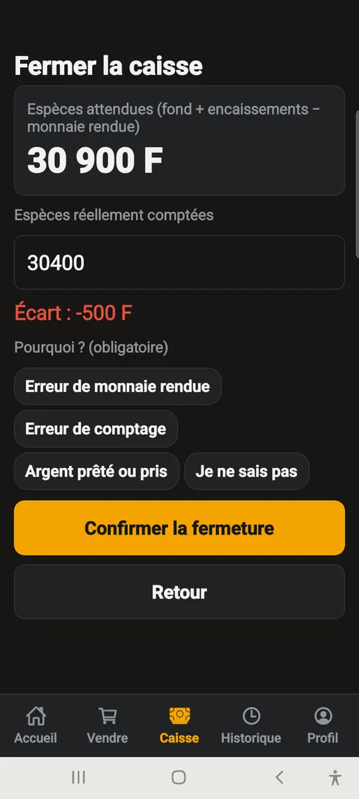
Je gère
Gérant : le stock, les livraisons, l'inventaire, les fournisseurs.
La carte
- « Ajouter depuis le catalogue Mon Djê » : coche les produits, saisis leurs prix.
- Un produit absent du catalogue s’ajoute à la main : il sera proposé au catalogue commun.
- Touche un produit pour corriger son nom ou son prix. Les ventes déjà passées ne changent pas.
- Un produit marqué « prix à saisir » a été déposé par l’équipe Mon Djê à ta demande : donne-lui son prix, il passe aussitôt en vente.
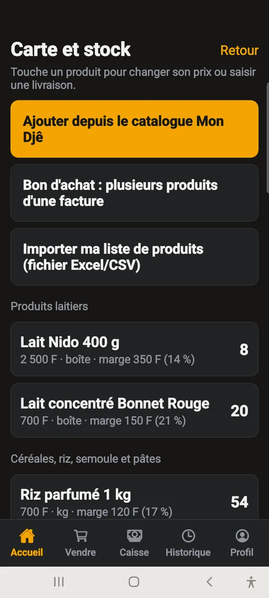
Le stock
- À chaque livraison, touche le produit et saisis ce que tu as reçu, en casiers ou à l’unité.
- Le stock baisse tout seul à chaque vente, et remonte à chaque annulation.
- Le bouton « Stock » ouvre deux vues : tout le stock, ou seulement ce qui est descendu au seuil.
- « Meilleures ventes » classe tes produits sur 30 jours, par quantité ou par argent : le plus vendu n’est pas toujours celui qui rapporte.
- « Stock bas » prévient avant la rupture : l’alerte se déclenche quand la quantité restante descend au seuil du produit, seuil que tu règles en touchant le produit.
- À l’import du catalogue, le seuil vaut la moitié du casier — six bouteilles pour un casier de douze. Sans casier, il vaut cinq.

L’inventaire
- « Stock → Inventaire : compter le stock » : compte ce qu’il y a vraiment, sans regarder le stock calculé par l’application — c’est fait exprès, pour que ton comptage ne soit pas influencé.
- Une fois le comptage terminé, le propriétaire ou toi voit l’écart, le motive (casse, consommé, erreur de comptage…) et régularise : le stock passe alors au chiffre compté.

Les fournisseurs
- Un fournisseur se crée à la première livraison, ou depuis « Fournisseurs ».
- Ce que tu leur dois se calcule tout seul : quantité livrée × prix payé, moins ce qui a déjà été réglé.
- Un règlement en espèces pris dans ton tiroir baisse l’attendu de ta caisse à la fermeture : coche « Espèces de ma caisse ».
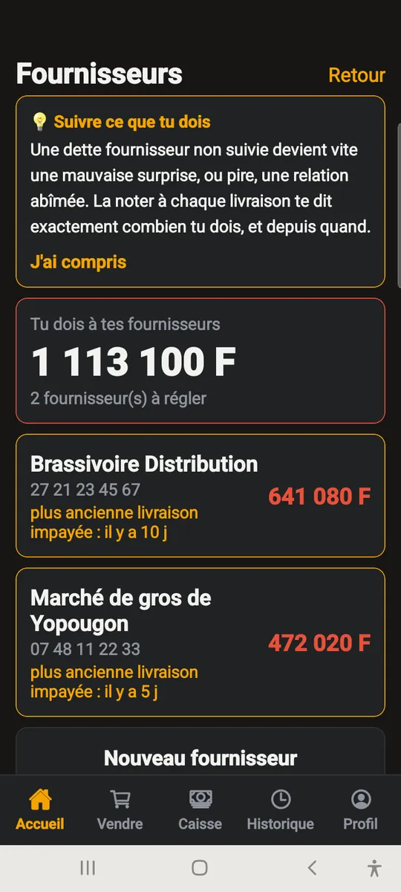
La trésorerie
- « Trésorerie » montre, compte par compte (espèces, Wave, Orange Money, MTN, Moov, banque), ce qu’il y a réellement.
- Touche « Compter » de temps en temps pour dire ce que tu as vraiment : sans ce pointage, les chiffres ne sont pas fiables.
- Un dépôt, un retrait ou ton propre apport se notent avec « Transfert ».
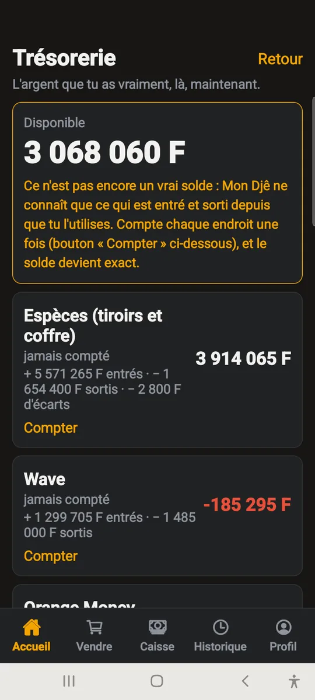
Je suis le propriétaire
Propriétaire : la carte, l'équipe, les chiffres, l'abonnement.
Ton personnel
- Crée un compte par personne, avec ses rôles. Une personne peut en cumuler plusieurs.
- Donne-lui son code provisoire ; elle le changera elle-même dans Profil.
- Quand quelqu’un part, désactive son compte : il ne pourra plus se connecter, mais son historique reste.
- Ne partage jamais ton propre compte : c’est lui qui voit l’argent.
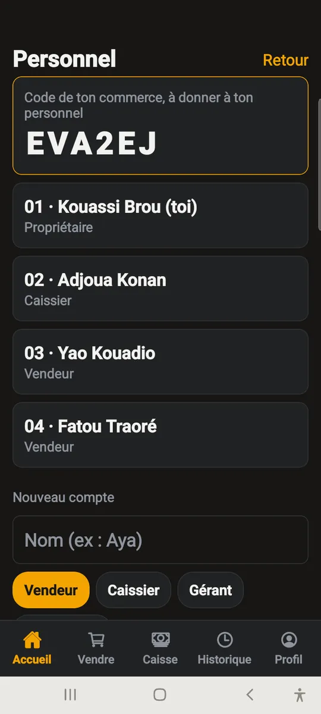
Ce que tu dois regarder chaque soir
- « Espèces encaissées non remises » : de l’argent est chez un vendeur. Il doit finir à zéro.
- « Écarts constatés » : le caissier a reçu moins que déclaré.
- « Auto-validés » : quelqu’un a déclaré et validé son propre encaissement. Normal s’il tient seul la caisse.
- Dans Historique, l’onglet Caisses donne l’écart de chaque service.
- « Activité du jour » montre, en un coup d’œil, toutes les commandes en cours dans le commerce (pas seulement celles d’un vendeur) et ce qui est sorti du stock aujourd’hui — ventes, pertes, ajustements.
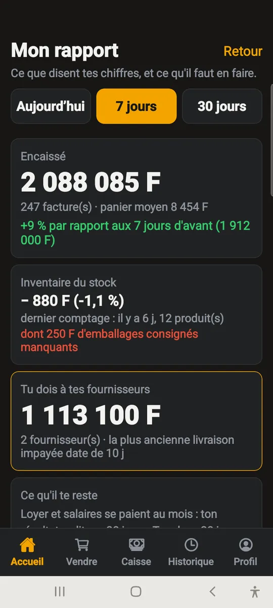
Le cahier de dépenses
- « Dépenses » enregistre tout ce qui sort du commerce : salaires, loyer, factures, frais divers.
- Une dépense qui revient chaque mois (loyer, salaire) se note « Chaque mois » : elle te sera rappelée, sans jamais s’écrire toute seule à ta place.
- Fixe un budget par catégorie : le rapport te prévient dès que tu le dépasses.
- Le seuil de rentabilité (dans Dépenses) dit combien vendre par jour pour couvrir tes charges fixes — il n’apparaît que si assez de tes prix d’achat sont connus.
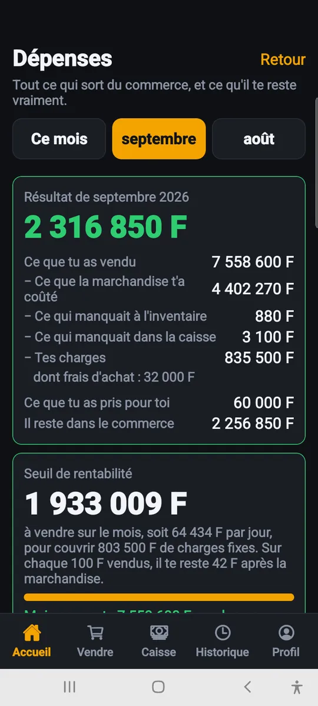
Avances au personnel
- Donne une avance depuis « Avances au personnel » : à qui, combien, comment.
- Elle se récupère plus tard, en espèces ou en Mobile Money, ou « déduite du salaire » — dans ce dernier cas, note simplement un salaire plus petit ce mois-là dans le cahier de dépenses.
- Ce que ton personnel te doit encore apparaît dans la Trésorerie.
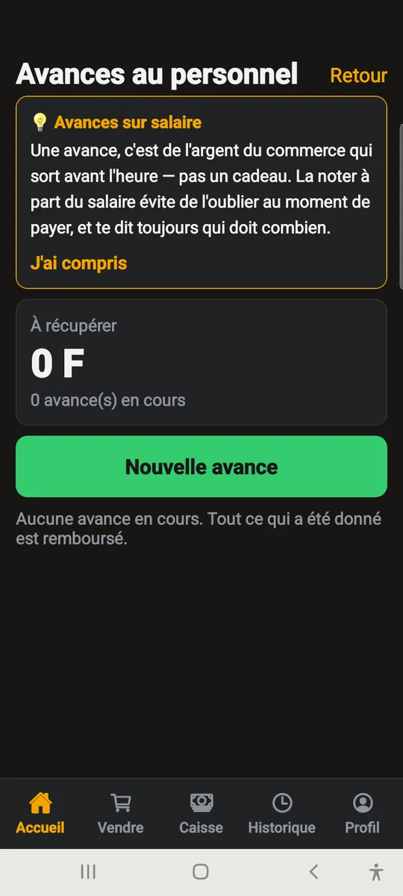
Ton image
- Dépose ton logo : il apparaît ici et en tête de chaque facture envoyée aux clients.
- Dépose ton QR marchand : tes vendeurs le montreront aux clients qui paient par Mobile Money.
- « Téléphones du commerce » : ton mobile et ton fixe s’impriment sur chaque facture, pour qu’un client puisse te rappeler.
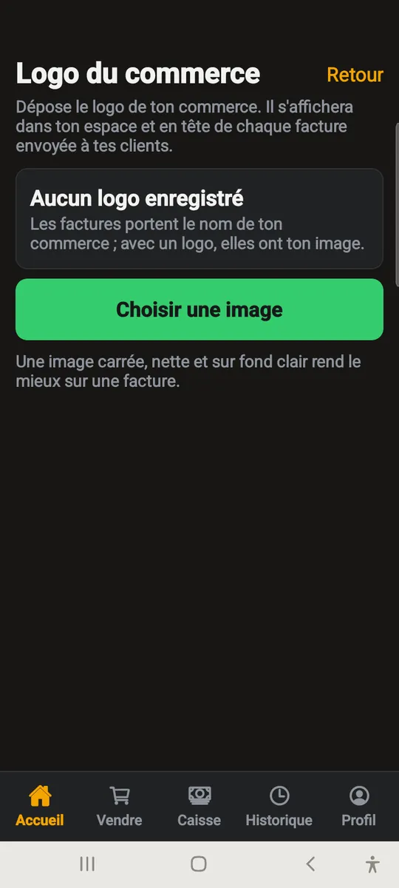
Nous joindre
- « Assistance Mon Djê » ouvre une conversation avec notre équipe : une question, un problème pendant le service, un produit à ajouter.
- Demande-nous d’installer des produits sur ta carte : nous te réclamons tes prix, ou nous les saisissons si tu nous les as donnés.
- Un produit que nous déposons sans prix reste invisible à la vente tant que tu n’as pas fixé le tien.
- Le bouton annonce nos réponses. Il faut du réseau : la messagerie ne fonctionne pas hors ligne.
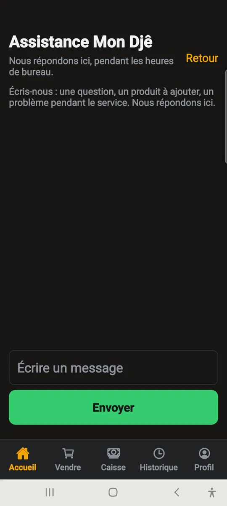
Chambres, logements, véhicules
Locations : séjours, réservations, cautions, baux, véhicules.
Chambres et séjours
- Dans « Séjours », touche une unité libre pour enregistrer une arrivée : nom du client, téléphone ou pièce d’identité, durée.
- Le tarif est celui de l’unité. Si tu en donnes un autre, l’application demande pourquoi : le motif est gardé.
- Tout ce que le client consomme (bar, restaurant) s’ajoute à la note de sa chambre. Encaisse comme une commande ordinaire.
- « Prolonger » ajoute une nuit à la note. « Enregistrer le départ » libère l’unité, même si la note n’est pas soldée.
- Une unité n’est occupée que s’il y a un séjour en cours : personne ne peut la marquer occupée à la main.
- Réservations et calendrier : « Réservations et calendrier » retient une unité pour des dates, sans rien encaisser. Deux réservations ne peuvent pas se chevaucher. Le jour venu, touche l’unité : l’arrivée réalise la réservation.
- Une réservation ne se modifie pas : annule-la (ou déclare le client absent) avec un motif, puis refais-la.
- Caution : elle se prend à l’arrivée ou plus tard, se garde à part de la caisse, et doit être rendue ou en partie retenue (avec un motif) avant le départ. Ce n’est pas un revenu.
- Départ avant la date prévue : la note reste facturée toute la durée. Pour rendre les nuits non passées, choisis « Départ et remise » : elle s’écrit avec son motif.
- Véhicules : chaque véhicule a sa fiche (immatriculation, compteur, km inclus par jour, prix du km en plus, assurance, visite). À la remise, note le kilométrage, le carburant et les dégâts déjà présents ; au retour, note-les de nouveau : les kilomètres en plus et le carburant manquant s’ajoutent à la note.
- Le compteur d’un véhicule ne recule jamais. Ce qu’il a de plus entre un retour et le départ suivant s’écrit comme « km hors location » et se voit dans le rapport : un véhicule qui roule sans être loué, c’est de l’argent qui s’en va.
- Baux et loyers : « Baux et loyers » loue une unité au mois. Le serveur crée chaque mois le loyer de chaque bail ; tu l’encaisses comme une vente (l’acompte est possible), et la facture devient une quittance de loyer.
- Un loyer ne s’annule pas : pour le baisser une fois, fais une remise avec son motif. Un bail ne se modifie pas : pour changer le loyer, on le résilie et on en refait un. Un loyer en retard se relance par WhatsApp depuis la fiche du bail.
- Un bail déjà en cours à la saisie commence au mois courant : on ne crée pas d’arriérés qu’on ne connaît pas. Le dépôt de garantie se rend ou se retient (avec un motif) avant de résilier.
- Ménage : une chambre libre après un départ affiche « À nettoyer » ; touche « Ménage fait » quand c’est fait. Le propriétaire peut mettre une unité hors service (travaux, panne) : plus d’arrivée ni de réservation.
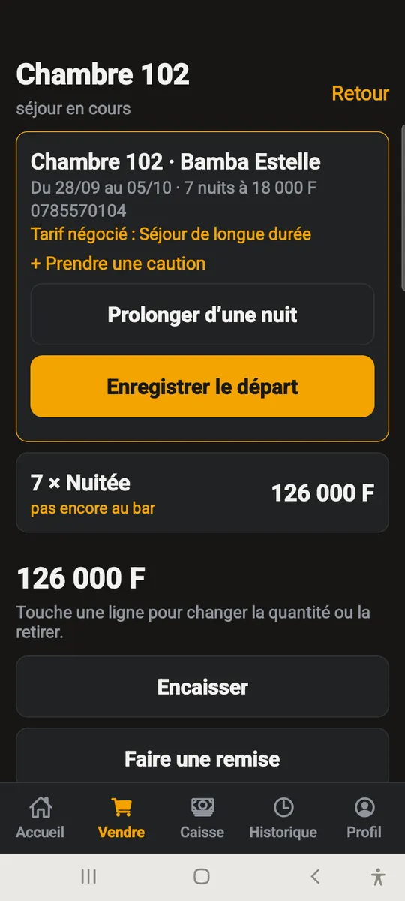
Pour tout le monde
Se connecter, et que faire quand le réseau coupe.
Se connecter
- Sur un téléphone déjà utilisé ici, touche ton nom dans la liste et tape tes 6 chiffres.
- Sur un téléphone neuf, saisis le code du commerce, ton numéro d’employé et ton code.
- Ton code est personnel : il signe tes ventes. Ne le donne à personne.
- Tu peux le changer toi-même dans Profil.
Quand le réseau coupe
- Continue à travailler : tout est enregistré sur le téléphone.
- Un bandeau orange indique combien d’opérations attendent d’être envoyées.
- Dès que le réseau revient, elles partent toutes seules et le bandeau disparaît.
- Un bandeau rouge veut dire que le serveur a refusé quelque chose : touche-le et préviens le propriétaire.